<!-- Copyright (c) 2021 8th Wall, Inc. -->
<!-- body.html is optional; elements will be added to your html body after app.js is loaded. -->

<div class="over">
  <span id="promptText"></span>
  <h3 id="messageText" style="display: none">
    Tap the lights to<br />change color
  </h3>
  
  
  <div id="gradient-box"></div>
</div>

<a-scene
  xrextras-gesture-detector
  landing-page
  xrextras-loading
  xrextras-runtime-error
  renderer="antialias: true; colorManagement: true; physicallyCorrectLights: true;"
  xrweb
>
  <a-camera
    id="camera"
    position="0 15 10"
    raycaster="objects: .cantap"
    cursor="fuse: false; rayOrigin: mouse;"
  >
  </a-camera>

  <!-- shadow light-->
  <a-entity
    light="type: directional;
             intensity: 0.8;
             castShadow: true;
             shadowMapHeight:2048;
             shadowMapWidth:2048;
             shadowCameraTop: 10;
             target: #holo;"
    xrextras-attach="target: holo; offset: 0 15 0;"
    shadow
  >
  </a-entity>

  <!-- ambient for fill -->
  <a-light type="ambient" intensity="0.3"></a-light>

  <!-- top level orbiting lights -->
  <a-entity xrextras-spin="speed: 5000;">
    <a-entity
      tap-lights
      class="cantap"
      geometry="primitive: sphere; radius: 0.4;"
      material="shader: flat; color: #5ac8fa;"
      light="type: point;
               intensity: 7.0;
               color: #5ac8fa"
      shadow
      position="-2 10 -2"
    >
    </a-entity>
    <a-entity
      tap-lights
      class="cantap"
      geometry="primitive: sphere; radius: 0.4;"
      material="shader: flat; color: #ff3b30;"
      light="type: point;
               intensity: 7.0;
               color: #ff3b30"
      shadow
      position="2 10 2"
    >
    </a-entity>
  </a-entity>

  <!-- bottom level orbiting lights -->
  <a-entity xrextras-spin="speed: 5000; direction: reverse">
    <a-entity
      tap-lights
      class="cantap"
      geometry="primitive: sphere; radius: 0.4;"
      material="shader: flat; color: #4CD964;"
      light="type: point;
               intensity: 7.0;
               color: #4CD964"
      shadow
      position="-2 7 -2"
    >
    </a-entity>
    <a-entity
      tap-lights
      class="cantap"
      geometry="primitive: sphere; radius: 0.4;"
      material="shader: flat; color: #ffcc00;"
      light="type: point;
               intensity: 7.0;
               color: #ffcc00"
      shadow
      position="2 7 2"
    >
    </a-entity>
  </a-entity>

  <!-- hologram with normals -->
  <holo-cap
    id="holo"
    src="./assets/kevin.hcap"
    xrextras-one-finger-rotate
    holo-scale="6"
  >
  </holo-cap>

  <!-- ground to cast shadow against -->
  <a-entity
    geometry="primitive: box"
    material="shader: shadow; transparent: true; opacity: 0.4"
    shadow="cast: false"
    scale="1000 2 1000"
    position="0 -1 0"
  >
  </a-entity>
</a-scene>
